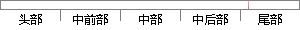

,data=trainset,rules=F,control =treecontrol)
片段位置图

相似结果|
相似片段 1： and fault status of varioushistorical data, to automatically generate the fuzzy control rules
相似片段 2： as following: process model is analysised;control rules and data rules is separated into anumber of subset
|
※ 片段修改建议 ※
近似词参考：